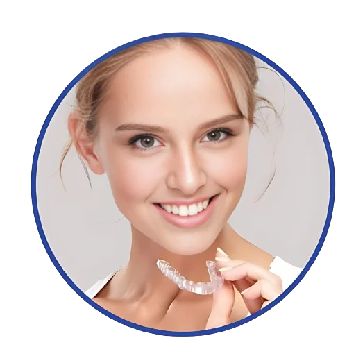

The teen years are a crucial stage in a person's development. It's a time when teenagers are discovering who they are and how they want to present themselves to the world, and their smile plays a significant role in that. At Pitner Orthodontics, we provide trusted orthodontic care for teens, prioritizing their confidence, comfort, and oral health.
When Should My Kid See An Orthodontist
An early evaluation provides significant benefits for both you and your child. During your child’s initial evaluation, we will take photos and a panoramic x-ray. This helps us determine if your child has missing teeth, teeth that are not erupting properly, insufficient or excessive space for permanent teeth, or alignment issues. For the vast majority of children, no treatment is needed at this age. We will inform you if future treatment is likely. Your child will then have brief check-ups every six months to monitor the development of their teeth. This process, offered at no charge to you, helps us identify the ideal time for your child to begin treatment, ensuring the best and most efficient results.
+
Growth and Development
During the teenage years, your child is still growing and developing, including their jawbone and facial structure. This makes it an ideal time to address misalignments or bite issues, as we can utilize the natural growth processes to guide teeth into their proper positions.
+ Easier to Correct
Teenagers' teeth and jaws are more adaptable to orthodontic treatment due to their flexibility. This allows for more comfortable and effective adjustments during this period.
+
Boost in Confidence
Let’s face it: adolescence is a critical time for building self-esteem and self-confidence. Addressing dental issues can greatly enhance your teenager’s confidence, enabling them to tackle social and academic challenges with a brighter, more assured smile.
+
Preventing Future Complications
Addressing misalignments and bite issues during the teenage years can prevent more severe problems from developing later in life. Orthodontic treatment can reduce the risk of future issues such as gum disease, jaw pain, and speech difficulties.

Addressing Common Teen Dental Problems
As teenagers undergo the natural development of their teeth and gums, several dental irregularities may arise. Fortunately, orthodontic treatment can effectively address these issues to ensure a healthy, beautiful smile. Some of these common irregularities include:
Crooked Teeth
Overcrowding
Gaps Between Teeth
Overbites and Underbites
Crossbites
Open Bites
mpacted Teeth
Addressing Common Teen Dental Problems
At Pitner Orthodontics, we understand that no two teenagers are alike, and neither are their orthodontic needs. That's why we offer a wide range of teen-specific orthodontic services to address various dental concerns. As a trusted orthodontist for teens in Columbia, SC, our goal is to provide each teenager with a customized treatment plan that caters to their unique smile and ensures optimal results. Here's an overview of our specialized teen orthodontic services:
When Should My Kid See An Orthodontist
An early evaluation provides significant benefits for both you and your child. During your child’s initial evaluation, we will take photos and a panoramic x-ray. This allows us to identify if your child has missing teeth, teeth not erupting properly, insufficient or excessive space for permanent teeth, or alignment issues. For most children, no treatment is needed at this age, and we will inform you if future treatment is likely. Your child will then have brief check-ups every six months to monitor the development of their teeth. This process, offered at no charge to you, helps us determine the ideal time for your child to begin treatment, ensuring the best and most efficient results.
+
PROS
Effective Alignment: Braces are highly effective in correcting a wide range of orthodontic issues, including severe misalignments and complex cases.
Predictable Results: Braces offer precise control over tooth movement, making it easier for orthodontists to predict and achieve desired outcomes.
+
CONS
Visibility: Braces are visible and may affect a teenager’s self-confidence, especially initially.
Diet Restrictions: Certain foods, such as sticky or hard items, should be avoided with braces to prevent damage to the brackets and wires.
Invisalign For Teens
We understand that some teenagers prefer a more discreet approach to orthodontic treatment. Invisalign for teens offers the ideal solution. These clear aligners are nearly invisible and custom-designed for each teenager.
They gently shift teeth into their correct positions over time, allowing your teen to maintain their confidence while achieving the smile they've always dreamed of.
+PROS
Invisibility: Invisalign aligners are nearly invisible, allowing teens to undergo treatment with minimal impact on their appearance.
Removable: Aligners are removable, making it easier for teens to eat, brush, and floss without dietary restrictions.
+
CONS
Visibility: Braces are visible and may affect a teenager’s self-confidence, especially initially.
Diet Restrictions: Certain foods, such as sticky or hard items, should be avoided with braces to prevent damage to the brackets and wires.
Personalized Treatment Plans
We believe that personalized care is essential for successful orthodontic treatment. Our orthodontists dedicate time to assess each teenager's individual needs, ensuring their treatment plan is customized to achieve optimal results.
FAQs About Teen Orthodontics
1. How much does teen orthodontic treatment cost?
The cost of treatment can vary depending on the type and complexity of the orthodontic issues. During the initial consultation, we’ll provide a personalized treatment plan with a clear breakdown of costs and discuss available payment options and insurance coverage.
2. Is orthodontic treatment uncomfortable for teenagers?
While there may be some initial discomfort or soreness when braces are first placed or adjusted, most teenagers find it manageable and adapt quickly. Invisalign aligners are generally more comfortable than traditional braces.
3. How long does teen orthodontic treatment typically take?
The duration of treatment varies based on individual needs. On average, most teenagers complete their orthodontic treatment in 18-24 months. Our orthodontist will provide a more specific timeline during the initial consultation.
4. How often will my teenager need to visit the orthodontist during treatment?
Regular appointments are necessary for adjustments and progress monitoring. Typically, visits occur every 4-8 weeks, depending on the treatment plan.
5. What is the best way to care for braces or Invisalign aligners?
Proper oral hygiene is essential during treatment. For braces, brushing and flossing around brackets and wires are crucial. Invisalign aligners should be removed before eating and cleaned regularly, as instructed.
Your Teen's Smile, Our Expertise
Smiles by Design for Teens
At Pitner Orthodontics in SC, we've established a reputation as trusted leaders in the field of orthodontics. Whether your teenager requires braces, Invisalign, or other orthodontic solutions, our experienced team is committed to delivering personalized care and support throughout their journey.
.webp)